Welcome / Front Page
Acts as the application's entry screen. It provides navigation to the login page and sign-up page, an exit action, a version-information action and a contact-developer action.
Application entryNavigation
A Java Swing desktop application designed to manage cafe users, staff, product categories, menu items, customer orders, billing and order records through a MySQL database.
Project documentation based on the supplied Java source files, NetBeans form metadata, actual application screenshots and MySQL DESCRIBE output.
The application combines two broad workflows: user and staff administration, and day-to-day cafe operations. Its dashboard links the catalogue, order-entry, billing and reporting screens.
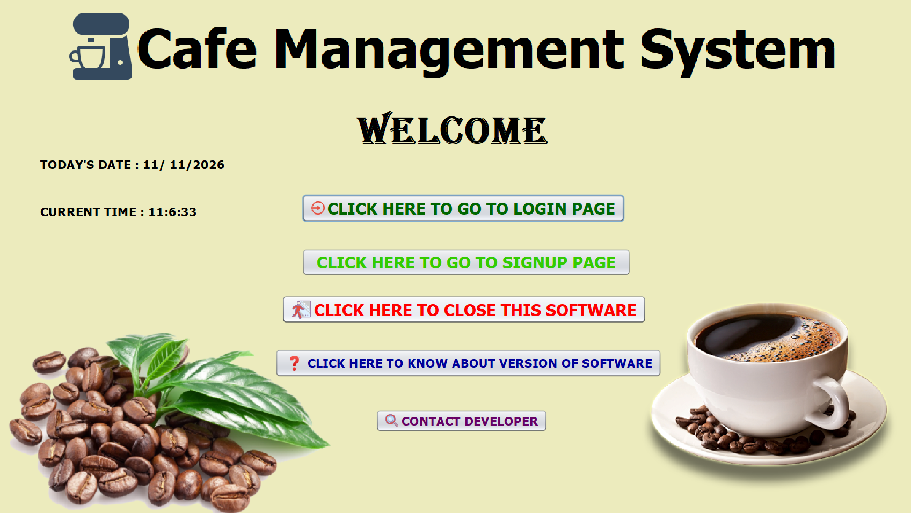
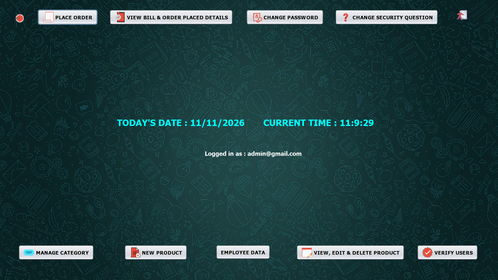
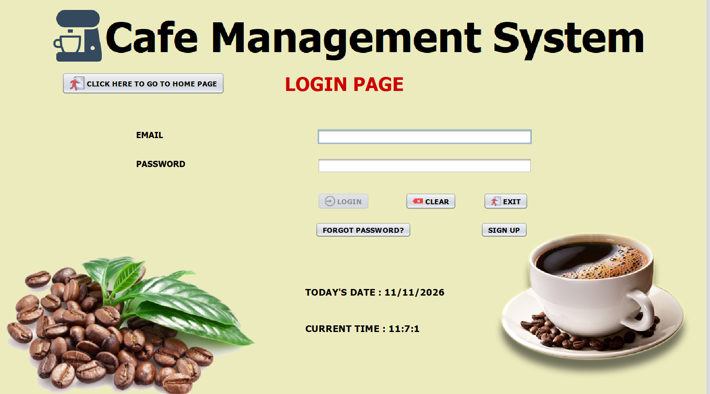
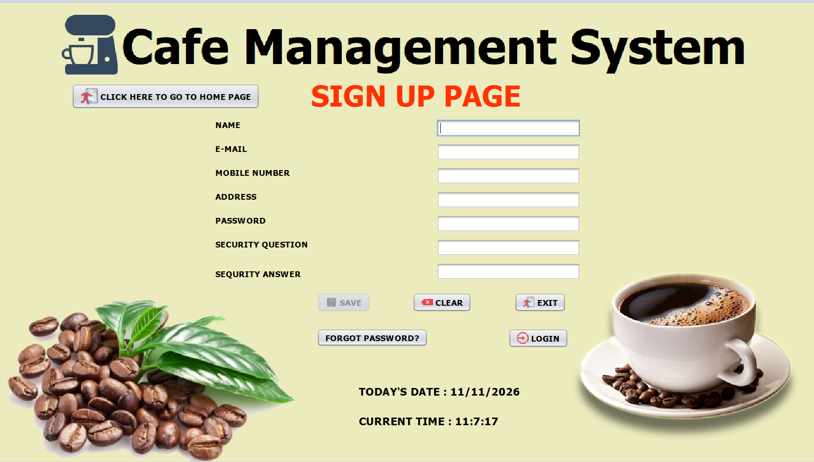
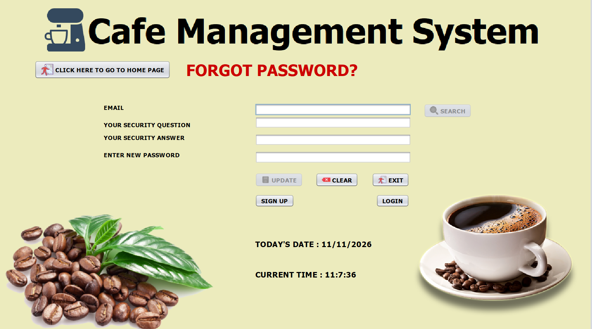
The module names and controls below are checked against the supplied Java source, NetBeans form metadata and owner-provided screenshots.
Acts as the application's entry screen. It provides navigation to the login page and sign-up page, an exit action, a version-information action and a contact-developer action.
Collects a new user's name, email, mobile number, address, password, security question and security answer. The form exposes Save, Clear, Exit, Forgot Password and Login actions.
Accepts email and password for authentication and provides Login, Clear and Exit controls. It also links to sign-up and password recovery.
Uses the registered email to retrieve the user's security question. The user supplies the security answer and a new password, then selects Update. The form also links back to Login and Sign Up.
Provides the main navigation after login: Place Order, View Bills & Order Placed Details, Change Password, Change Security Question, Manage Category, New Product, View/Edit/Delete Product, Verify Users and Employee Data.
Displays the existing category list and provides an Add New Category field with Save and Clear controls. The form notes that selecting a row in the category table deletes that category.
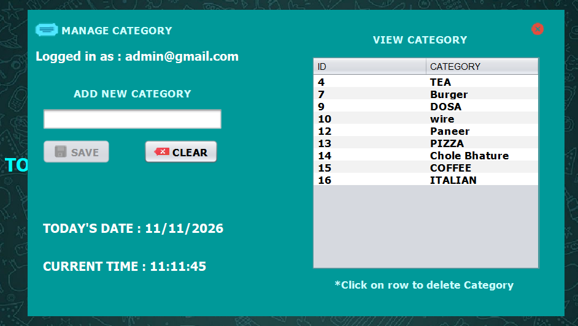
Creates a product record using product name, category and price. The form includes Save and Clear controls and is the entry point for adding menu items to the catalogue.
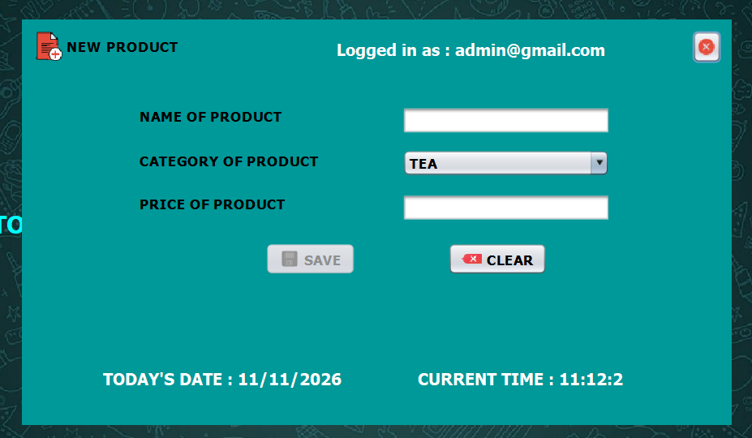
Shows product ID, name, category and price. A user can select a product, update its details, clear the form or delete the selected product.
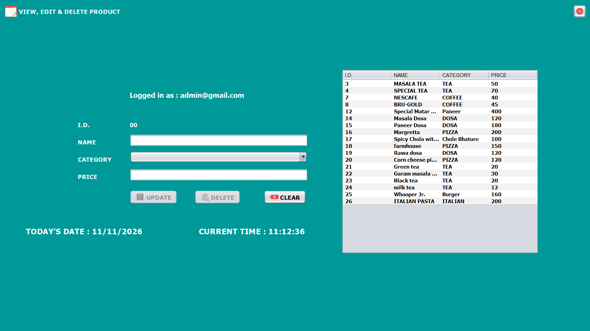
Captures customer name, mobile number, email and address. The operator chooses a category, searches products, selects a product and quantity, adds it to the cart, reviews line totals and grand total, then generates and prints the bill. The form also displays bill ID, date, time and logged-in user information.
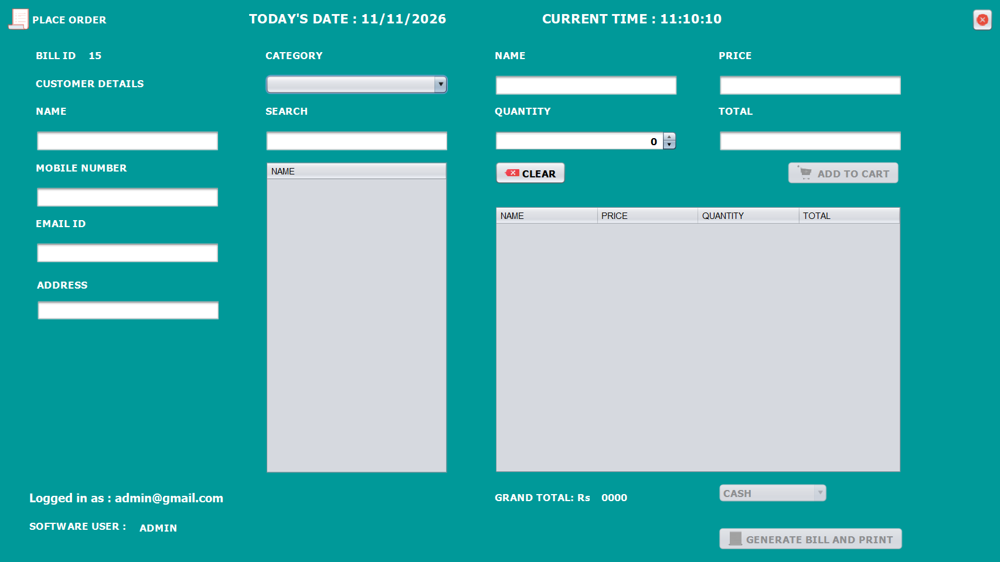
Displays bill/order records in a table. The form offers date filtering, a control to change order-by ID, and a row-click action to open a bill.
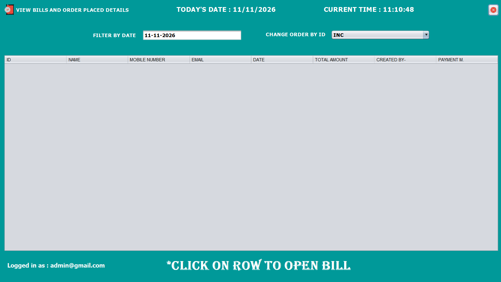
Provides employee/user lookup by email, ID or name. The form includes fields for name, mobile number, address, password, security question and answer, ID and active status. It also provides Search and Clear actions.
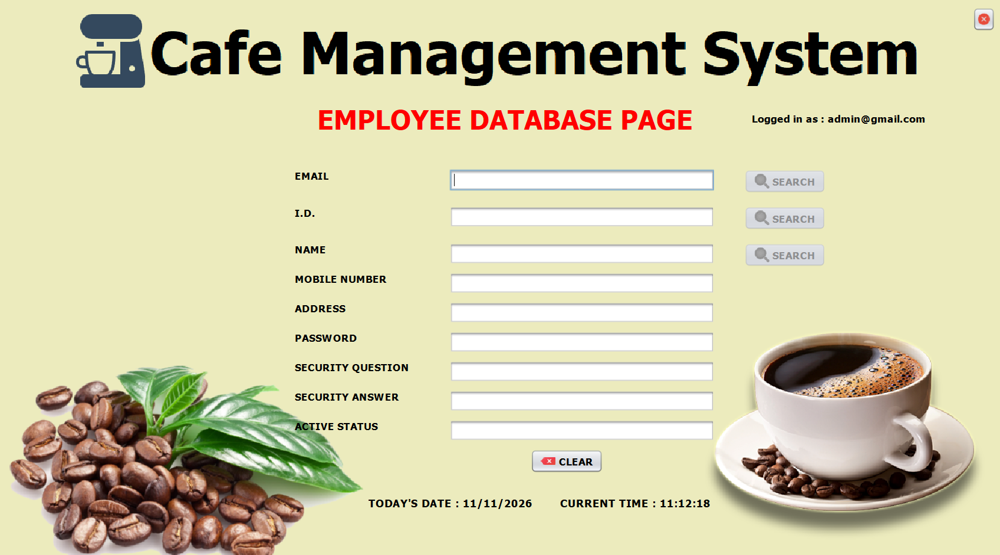
Lists registered users and allows the administrator to search by email. The form instructs the operator to click a row to change the user's status.
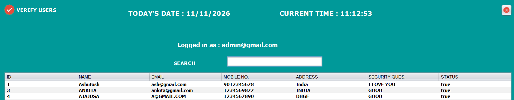
Allows the logged-in user to enter the old password, new password and confirmation before updating credentials.
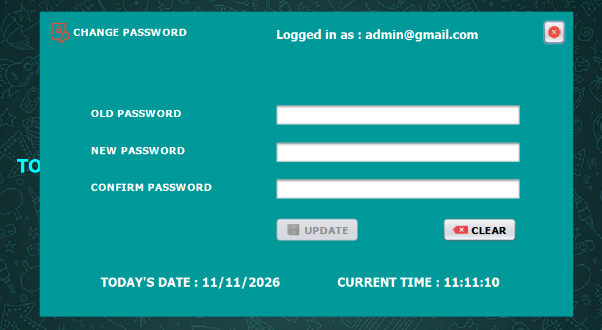
Displays the old security question and collects a new question, new answer and password before updating the recovery details.
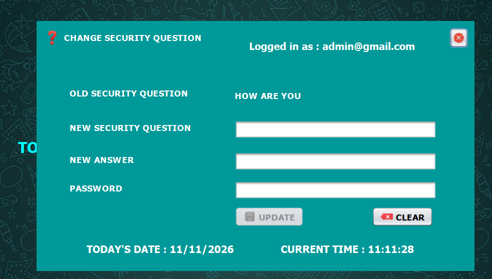
Enter customer identity and contact details.
Select category, search product and set quantity.
Add selected items and review calculated totals.
Generate the bill and invoke the print workflow.
The schema below is transcribed from the MySQL DESCRIBE output screenshots and cross-checked against the supplied Java source.
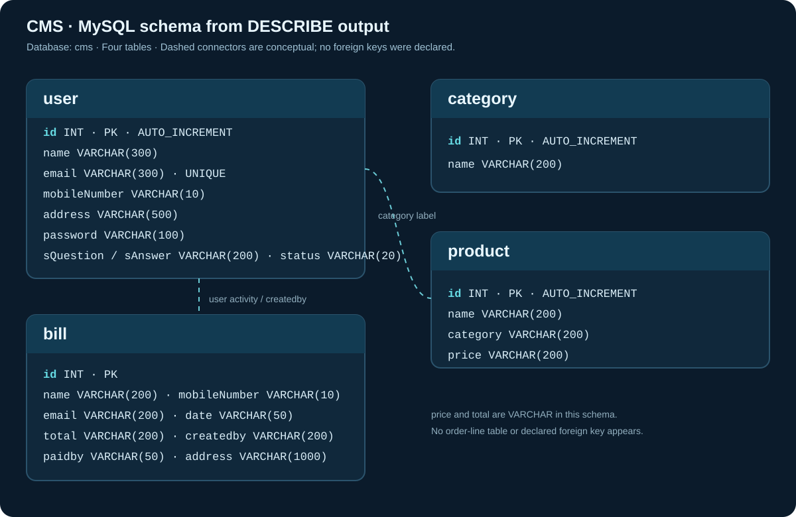
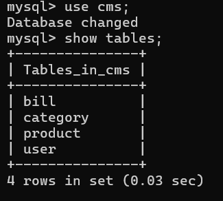
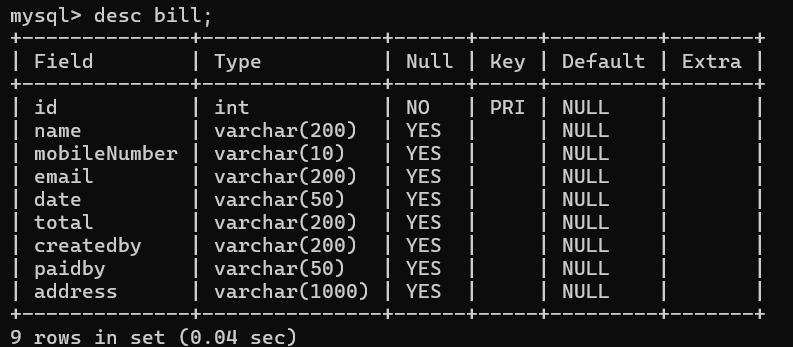
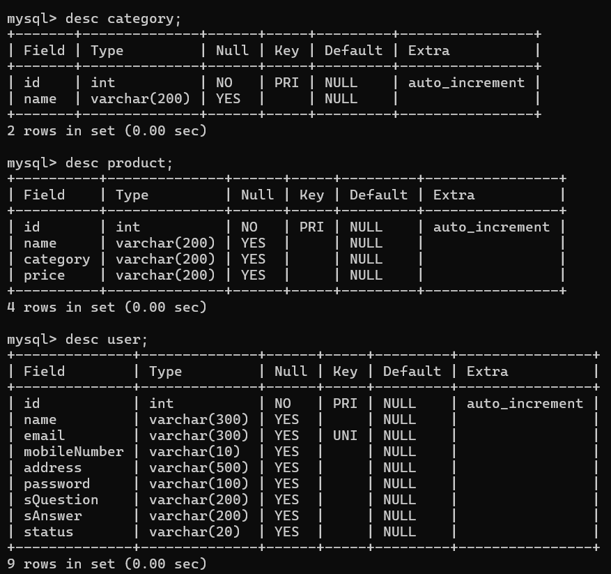
userStores user/employee account and profile information. The DDL defines an auto-increment ID primary key and a unique email.
CategoryStores the menu/category names used to organise products.
productStores the cafe product catalogue. The supplied DDL stores the category label as text rather than declaring a foreign key.
billStores customer and transaction summary fields shown in the supplied MySQL DESCRIBE output.
The supplied MySQL DESCRIBE screenshot explicitly shows both paidby VARCHAR(50) and
address VARCHAR(1000) in the bill table. The Java BillDao
also reads and writes these fields. An older tables.java source file contains a shorter
CREATE TABLE statement that omits them; the DESCRIBE output is stronger evidence of the database
structure actually inspected by the project owner.
No explicit foreign-key constraints or separate order-line table appear in the recovered DDL. The Java application may represent cart line items in the bill-generation logic or in an unprovided database structure; that cannot be confirmed from the supplied files.
The compiled connection class contains a hard-coded database credential. The public portfolio
therefore does not redistribute the original 7z archive. The recovered DAO bytecode also shows SQL
strings assembled through concatenation in several operations; parameterised
PreparedStatement queries should be used to reduce SQL-injection risk. The user table
stores a password field; a production system should store salted password hashes, not plaintext
credentials. The employee form includes a password field, which should not be exposed in a staff
listing.
These are observations from the supplied compiled files, not claims that the application was deployed publicly or suffered a breach.
Return to the main portfolio to explore research papers, electronics projects and technical interests.
Back to projects ↗